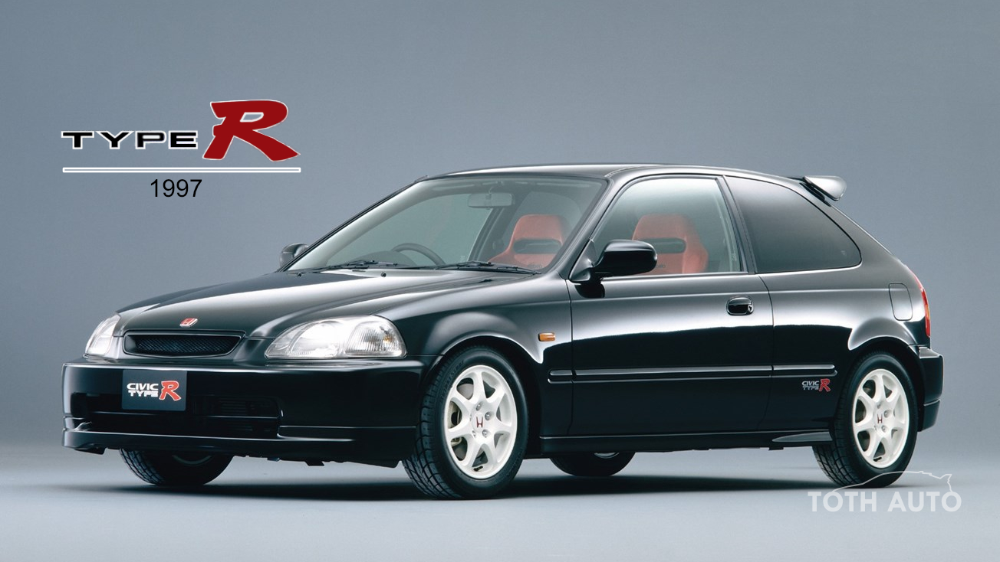
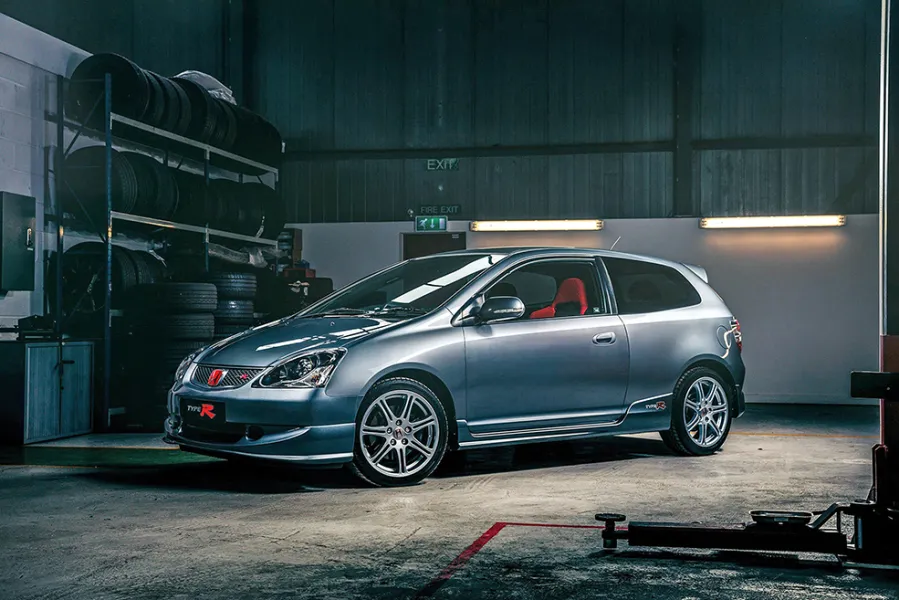
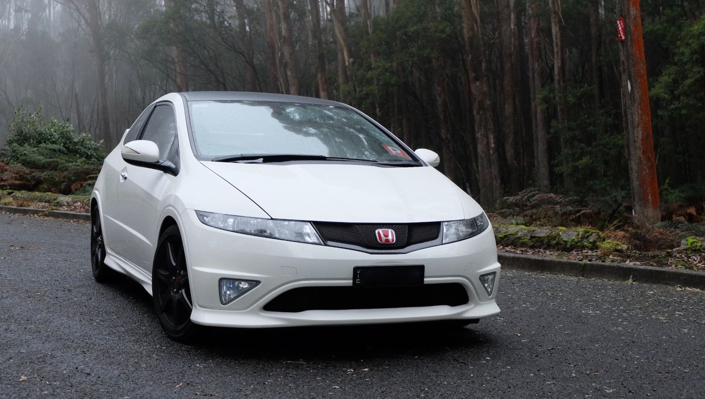
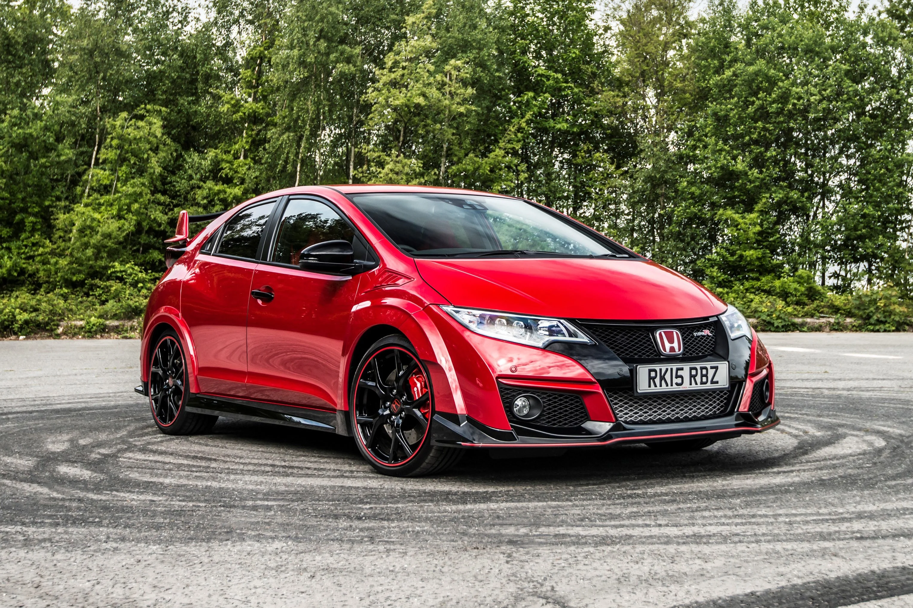
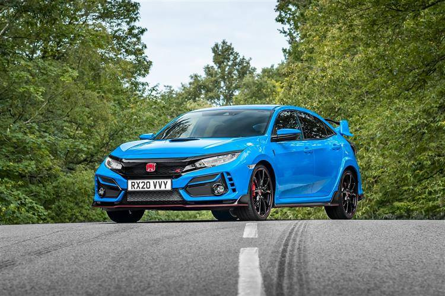

Története
A Honda Civic Type R eldője a Honda NSX Type-R volt, melyből a vállalat inspirációt merített a teljesítményorientált modellek fejlesztéséhez. A Honda NSX Type-R a Honda NSX "középkategóriás" sportautó továbbfejlesztett változata mely 90-es években került bemutatásra, és azonnal hírnevet szerzett a kivételes teljesítményével, vezetési élményével, megbízhatóságával és az elérhetősőgével más sportautókhoz képest.
Az autó születése tehát a NSX Type-R sikereinek örökségét követve történt. A tervezőcsapat továbbfejlesztette az NSX Type-R tervezési filozófiáját, és átvitte azt a Honda tömegpiaci kategóriájába, kifejlesztve egy olyan modellt, amelyet széles körű autós közösség is élvezhet.
A Civic Type R tervezésekor a mérnökök a könnyűség elvére helyezték a hangsúlyt, hasonlóan az NSX Type-R-hez. Az erős, de könnyű karosszéria, az agresszív külső dizájn és az aerodinamikai elemek mind hozzájárulnak az autó kivételes teljesítméníéhez. Emellett a Civic Type R is átveszi az NSX Type-R által bevezetett technológiákat, például a fejlett futóműrendszert és az erőteljes B15b motorot, mely a legjobb teljesítmény/liter mutatóval rendelkezett akkoriban.
Korábbi modellek
EK9 (1997-2000)
Megfizethető, széles körben elérhető Type RA Type R
típusjelzés első ízben az 1992-es Honda NSX Type R modellen jelent meg, mely magasra tette a lécet a teljesítmény és a menettulajdonságok terén, viszont rendkívül csekély példányszámban készült. A Civic Type R tervezésekor ugyanaz az elv vezette a mérnököket, mint az Integra és az NSX esetében, azaz szerették volna magával ragadó vezetési élménnyel megajándékozni a Honda-tulajdonosokat.
A kizárólag Japánban forgalmazott EK9 számos különleges műszaki megoldást vonultatott fel, ilyen például a rendkívüli magas (116 LE/1000 cm3) literteljesítményű, 1,6 l-es DOHC-vezérlésű VTEC motor, a mindössze 1050 kg-os saját tömeget eredményező, nyomás alatt hegesztett karosszéria, a részlegesen önzáró differenciálmű (LSD), valamint más típusokban nem alkalmazott, különleges felfüggesztés. Az EK9 meggyőzte a vásárlókat és az autós szakma képviselőit is – az orrmotoros, elsőkerék-hajtású, erőtől duzzadó ferdehátú sikerre ítélt típus lett.

EP3 (2001-2005)
Az első generáció elsöprő sikere után a Civic Type R második szériája már megjelent Európában is, és ebben nagy szerepet játszott, hogy a modell gyártása ekkor már az Egyesült Királyságban zajlott. Az EP3 sorozatnál vezették be a vadonatúj, azóta már legendássá vált 2,0 literes, DOHC i-VTEC „K” sorozatú motort, mely messze túlszárnyalta a hagyományos felépítésű, atmoszférikus, 2,0 literes erőforrásokat. Arról se feledkezzünk meg, hogy az újdonságot továbbfejlesztett fékrendszer, precíz, hatfokozatú sebességváltó és – a felhasznált nagyszilárdságú acélnak köszönhetően – elődjéhez mérten 80 %-kal nagyobb torziós merevségű karosszéria jellemezte. Mindemellett az állítható távtartókarral kiegészített első rugóstag, illetve a hátsó, kettős keresztlengőkaros felfüggesztés a friss fejlesztésű elektromos szervokormánnyal (EPS) és változó áttételű kormányművel (VGR) társítva rendkívüli kezelhetőséget szavatolt az EP3-nak.

FN2/FD2 (2007-2011)
A harmadik Civic Type R egyedülálló volt abban a tekintetben, hogy az európai és a japán változat jelentősen különbözött egymástól. Míg az itt kapható modell alapját az FN2 típuskódú ferdehátú adta - melynél megtartották az elődnél nagyszerűen bevált, 2,0 literes motort is, azonban fontos változás volt a módosított padlólemez, mivel ennek köszönhetően az üzemanyagtartály az első ülések alá került, így lényegesen javult az utastér helykínálata és alakíthatósága – addig Japánban a lépcsőshátú FD2-re épülő Type R-t forgalmazták, mely még sportosabb lett a nagyobb teljesítményű K20A erőforrásnak, a továbbfejlesztett, részlegesen önzáró differenciálműnek és a fáradhatatlan Brembo fékrendszernek köszönhetően. Hogy mérsékeljék a szedán nagyobb tömegét, hagyományos hegesztés helyett több helyen szerkezeti ragasztót alkalmaztak, valamint a karosszéria egyes részeit alumíniumból készítették.

FK2 (2015-2017)
A piaci igények és az új környezetvédelmi előírások arra sarkallták a Hondát, hogy turbófeltöltéses motort fejlesszen a Type R-hez. Hosszú és rendkívül aprólékos munkával született meg a K20C1 jelű, 2,0 literes, feltöltős erőforrás, mely 310 LE teljesítménnyel kápráztatta el a nagyközönséget. Annak érdekében, hogy a megnövelt teljesítményt minél hatékonyabban átvihessék az útra, kettős függőcsapszeges első rugóstagot és részlegesen önzáró differenciálművet építettek be, ezáltal számottevően mérsékelték a nagy teljesítményű elsőkerék-hajtású autók irányítását megnehezítő, úgynevezett hajtási befolyást. A 2015-ben bemutatott Civic Type-R mindössze 5,7 másodperc alatt gyorsult 0-ról 100 km/órás sebességre, míg strapabíró Brembo fékrendszere hatalmas, 351 mm-es átmérőjű első tárcsákra épült. Az FK2 nemcsak közúton bizonyított, hanem világszerte megannyi túraautós versenysorozat bajnoki címét elhódította.

FK8 (2017-2022)
5 évvel ezelőtt jelent meg a Civic Type R legújabb változata, az FK8. Ez messze túlszárnyalta elődjét, az FK2-t, mivel immáron adaptív lengéscsillapító felelt az autó úttartásáért, a továbbfejlesztett K20C1 erőforrás teljesítménye pedig 320 LE-re nőtt. A modell még intenzívebb vezethetőségének érdekében a mérnökök a leszorítóerőre fókuszáltak így alakították ki a karosszériát és a módosították a padlólemezt, szinte teljesen laposra. A modell elérhető volt az Egyesült Államokban is, sőt a tengerentúlon adták el a legnagyobb mennyiséget az FK8 kódjelű Civicből.
